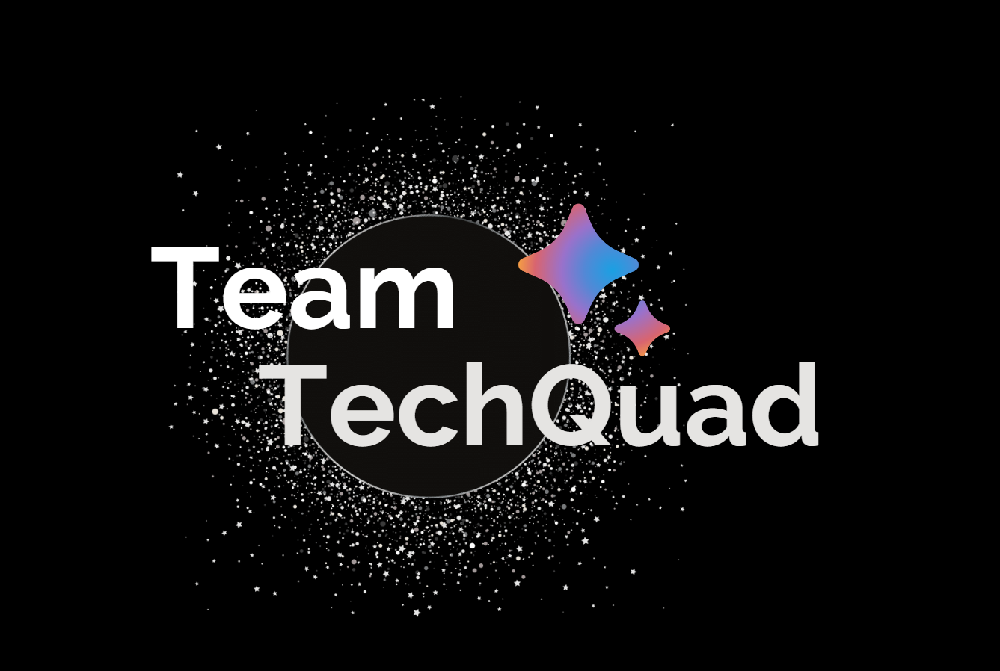
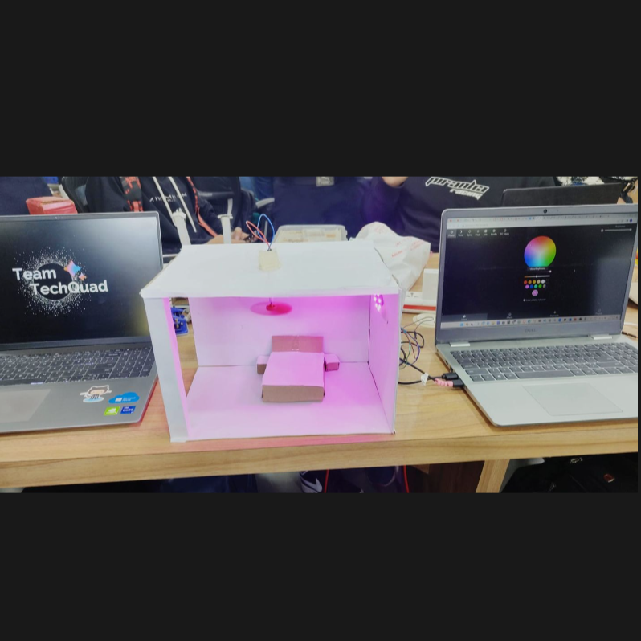
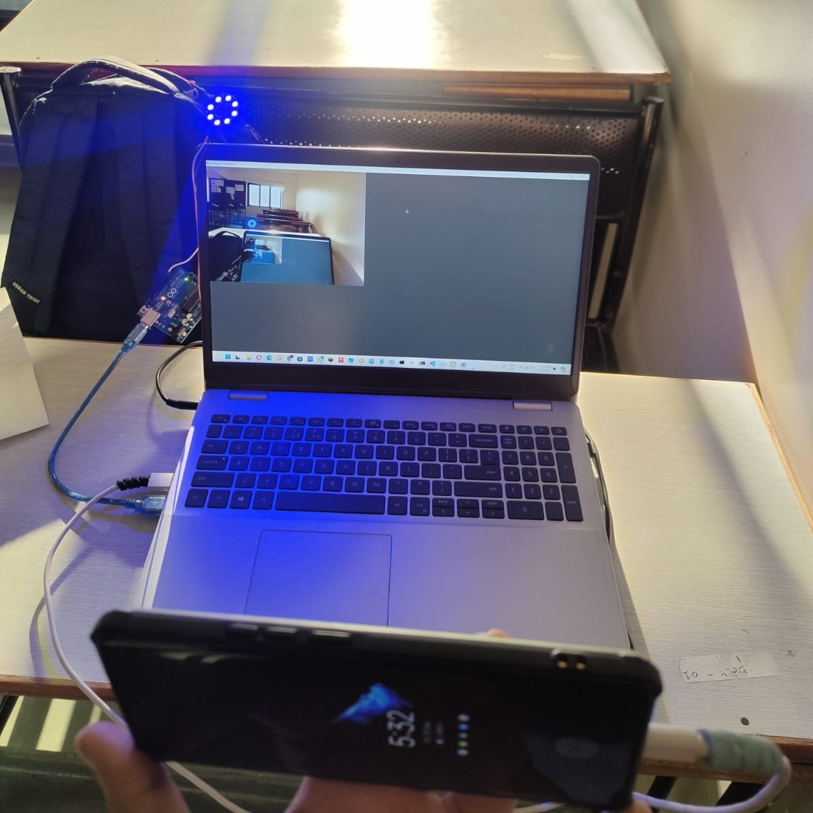

Home Automation: Revolutionizing the Way We Live, in a nutshell
We ‘Team TechQuad’ built a project for our recent college Electronics Hackathon
{november 2023}!
MoodE : Mood Based Environment Development
Technology and Approach
Core Technologies
OpenCV
Basic Electronics
Machine Learning Libraries
Project Objective
Create an adaptive system designed to enhance user well-being in monotonous work environments and medical
settings.
System Components
1. Mood Detection
2. Algorithm: Haar Cascade (Real-time object detection)
Alternative Algorithms Explored:
MTCNN algorithm
YOLO v8 ML libraries
Environment Modification Strategies
a. Lighting Adaptation
Dynamic light changes based on detected user mood
Real-time environmental response.
b. Audio Experience
Background music selection
Curated "feel-better" centered songs
Emotional state enhancement.
c. Aromatic Enhancement
Automated perfume dispensing
Designed to create a more pleasant sensory environment
Improve overall user comfort.
Core Purpose
Develop a software system focused on alleviating user fatigue and improving emotional state through
multi-sensory environmental modifications.
Future Development
Developments include refining mood detection algorithms with user feedback, enhancing integration with
home automation systems, and exploring AI-based decision-making for personalized user experiences.

During Production:

— Smartly controlled fans for saving energy.
— App-operated lighting for effortless convenience and personalized moods
✨
— Direct app access to garage door automation for seamless entry and
security
> Program Files at My
Github
Heramb Salunkhe: First-Year
Student pursuing Electronics & Communication Engineering (AI-ML)
. -. -..